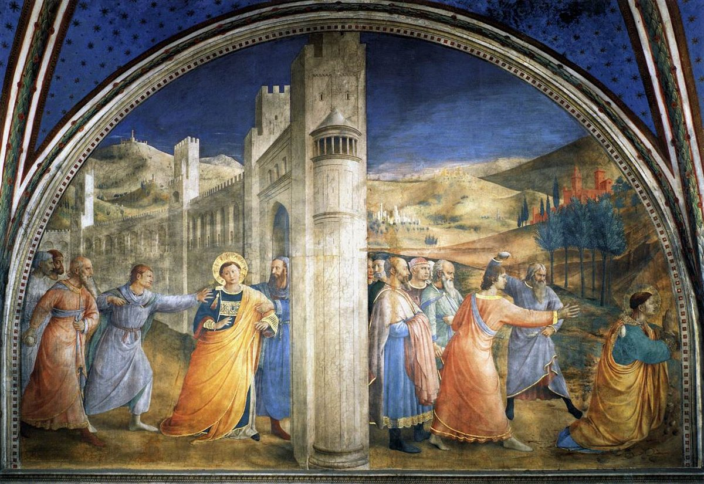

Acts 7 — The Mister Translation

⚠ Fra Angelico paints the end of the chapter as two moments divided by a pillar: at the left Stephen is taken by the arm and led toward the city gate — v58’s ‘having thrown him out of the city’ — and at the right he kneels with his hands raised before the men who stone him (vv59–60). The halo is the painter’s: Luke gives Stephen a face ‘like the face of an angel’ before the council (6:15) and says nothing of any light at his death. The sky behind him is plain: the heavens that Stephen says he sees opened (vv55–56) are not opened for the viewer, and nothing in the fresco shows the Son of Man standing. No one in it is marked as the young man called Saul, or as the witnesses who lay down their garments (v58). Painted in the late 1440s for the private chapel of Pope Nicholas V.

![A crowded oil painting. At the lower right a young man in a red-and-white brocade garment kneels with his hands raised and his face turned upward, ringed by men who lift stones: at the centre a shirtless man holds a rock above his head with both hands, and at the right a man in a white shirt throws up his arm. At the upper centre a group of richly dressed men sit on a platform and look on. At the left a man in a red cloak sits on a dark horse with his back to the viewer. Domed and towered buildings fill the background under a pale sky.](img/art/rembrandt-stoning-of-stephen.jpg)
⚠ Rembrandt, before he turned twenty, paints the stoning as a crush of bodies pressed around one kneeling man whose face is turned up: the prayer of vv59–60, made visible. Luke says Stephen ‘saw the glory of God and Jesus standing’ (v55); in the painting the sky is plain and nothing stands in it. The seated group at the top is in the picture and not in the text: Luke has the council’s anger and then the stones, with no verdict between them and no place from which anyone watches, and the painter supplies a raised seat. The horseman at the left, his back turned, has no counterpart in the chapter either: v58 names exactly one onlooker, the young man called Saul, and gives him no horse.

Translator’s Notes — verse by verse
Each note explains this translation's choice and compares the seven versions on the shelf. Quotations from copyrighted versions (NIV, TLB, NWT) are kept to short phrases for comparison; KJV, Geneva, Douay-Rheims and ASV are public domain.
⚠ A question about “these things” — and an answer that does not answer it. The high priest asks ei tauta houtōs echei, “Are these things so?” (the Byzantine text adds ara after ei; the printed Greek has none). “These things” are the charges of 6:11–14, but the Greek names none of them, and Stephen answers none of them in so many words: the answer is a retelling of Israel’s history from Abraham on. KJV, ASV, Douay and NWT 1984 “Are these things so?”; NIV “Are these charges true?” and TLB “Are these accusations true?” print the charges into the question, and NIV “asked Stephen” adds the name. The high priest is not named here; Annas and Caiaphas were named at Acts 4:6, and the council has been the Sanhedrin of Acts 6:12 and 6:15 since.
“Men, brothers and fathers.” The address Andres adelphoi kai pateres stands in two verses of the New Testament: here, and Acts 22:1 (not yet on these pages), where Paul uses it to a Jerusalem crowd. “Brothers” are Stephen’s peers and “fathers” the elders over him. KJV “Men, brethren, and fathers,” Douay “Ye men, brethren, and fathers,” NWT 1984 “Men, brothers and fathers”; ASV “Brethren and fathers” and NIV “Brothers and fathers” drop “men”; TLB drops the address altogether and opens with “This was Stephen’s lengthy reply.” Stephen will address Moses’s two quarrelling Hebrews with the same pair, “Men, you are brothers” (v26).
“The God of glory” — one of a kind, and the frame of the speech. Ho theos tēs doxēs stands in one verse of the New Testament, this one. In the Greek Old Testament (Brenton’s text) it is the opening of a line in Psalm 28:3 (not yet on these pages): “the God of glory thundered.” The speech opens on the God of glory appearing, and it ends on Stephen seeing “the glory of God” (v55). KJV, ASV, Douay, NIV and NWT 1984 “the God of glory”; TLB “The glorious God.”
“Appeared” — and where. The verb is ōphthē, “appeared, was seen,” and it begins a run: God to Abraham (v2), Moses to the two fighting men (v26), an angel to Moses (v30), and the angel “who appeared to him in the bush” (v35). The first appearance is in Mesopotamia, the Greek Old Testament’s name for Aram-naharaim (Genesis 24:10 there reads eis tēn Mesopotamian; see Aram-naharaim), outside the land the council stands in and before any holy place in it. ⚠ Genesis does not say it that way. Genesis 12:1 has “Jehovah said,” and it comes after 11:31–32, where Terah takes Abram from Ur and dies in Haran; the first verb of appearing to Abram is at Genesis 12:7, in Shechem. But Genesis 15:7 has “I am Jehovah, who brought you out of Ur of the Chaldeans,” and Nehemiah 9:7 (not yet on these pages) likewise says God brought Abram forth out of Ur of the Chaldees. Readings differ on whether the call of Genesis 12:1 is a second summons in Haran or the one summons that Stephen places before Haran, and Genesis does not decide. Haran is “Charran” in the KJV (Charran, the Greek form) and “Charan” in the Douay, and NIV “Harran.”
The call in v3 — one clause short of the Greek Old Testament. Acts 7:3 matches the Greek of Genesis 12:1 (Brenton’s text) word for word — exelthe ek tēs gēs sou kai ek tēs syngeneias sou, kai deuro eis tēn gēn hēn an soi deixō — except that the Greek Old Testament continues, “and from your father’s house” (kai ek tou oikou tou patros sou), and Acts leaves it out; the Hebrew also has it (Genesis 12:1: “from your land, from your kindred, and from your father’s house”). The omission is not explained, and a speech that goes on to say Abraham left after his father’s death (v4) does not need the clause. The Byzantine text and Nestle-Aland 28 have ek before “your kindred”; Westcott–Hort and Tregelles do not; the printed text has it. KJV “Get thee out of thy country, and from thy kindred,” ASV “Get thee out of thy land, and from thy kindred,” Douay “Go forth out of thy country, and from thy kindred,” NWT 1984 “Go out from your land and from your relatives,” NIV “Leave your country and your people,” TLB “leave his native land, to say good-bye to his relatives.”
⚠ When did Terah die? Acts 7:4 and three verses of Genesis do not add up the same way. Genesis 11:26 has Terah live seventy years and father “Abram, Nahor, and Haran”; Genesis 12:4 has Abram leave Haran at seventy-five; Genesis 11:32 has Terah’s days at two hundred and five and his death in Haran. If Abram was born when Terah was seventy, he left Haran at Terah’s age of 145, sixty years before Terah died, and Acts 7:4 says he moved “after his father died.” Readings differ. One reads Genesis 11:26 as the age at which Terah began to father sons, with Abram named first as the chief of the three and born at Terah’s age of 130 (205 minus 75), which is the arithmetic that makes Acts 7:4 and Genesis agree; another keeps Abram as the eldest and takes Acts as ordering the events differently from Genesis; and the Samaritan Pentateuch is reported to give Terah’s death at 145 in Genesis 11:32, a reading this library has not checked (it prints the Masoretic text and notes variants). This translation prints each text as it stands and does not choose. See Terah and Ur.
“Moved” — the verb that comes back in v43. Metōkisen, “caused to move house,” is metoikizō; it stands in two verses of the New Testament, here and at v43, where it is God’s word for the exile beyond Babylon. Its noun, metoikesia, is the “deportation” of Matthew 1:11–12 and 17 (dictionary). The subject of the verb is not repeated; it is God, from v2. KJV, ASV and Douay “removed him,” NIV “God sent him,” Geneva “God brought him,” TLB “God brought him here,” NWT 1984 “[God] caused him to change his residence.”
“Not even a foot’s breadth” — the words of Deuteronomy 2:5. Oude bēma podos is word for word what the Greek Old Testament has at Deuteronomy 2:5, where God refuses to give Israel any of Edom’s Mount Seir; this translation reads there “not so much as a foot’s breadth.” Acts applies the idiom to Abraham in Canaan. The promise is Genesis 17:8 (in the Greek, “to you and to your seed after you… for an everlasting possession,” eis kataschesin aiōnion), and the childlessness is Genesis 15:3: “to me you have given no seed” (in the English of the Hebrew, “Behold, to me Thou hast given no seed”). The noun kataschesis, “possession,” stands in two verses of the New Testament, here and at v45, where the fathers enter into the possession of the nations. KJV and ASV “no, not so much as to set his foot on,” NIV “not even enough ground to set his foot on,” NWT 1984 “no, not a footbreadth,” Geneva “no not the breadth of a foot,” Douay “no, not the pace of a foot,” TLB “not one little tract of land.”
No inheritance — and a burial field. The Greek says Abraham was given no klēronomia, an inheritance, in the land, not that he owned no ground in it: Genesis 23 has him buy the field and cave of Machpelah from Ephron the Hittite for four hundred shekels of silver, as a possession for a burial site (Genesis 23:20). It is the one piece of land the Genesis text gives him, and the purchase that v16 will mention.
⚠ Two verses spliced. Verse 6 is Genesis 15:13: the seed “a resident alien in a foreign land,” enslaved and afflicted, “four hundred years.” Verse 7 begins with the first half of Genesis 15:14, “the nation to which they will be slaves I will judge,” but where Genesis goes on “and afterward they shall come out with great possessions,” Acts goes on “and will serve me in this place.” That clause is the verb of Exodus 3:12 — “you will serve God on this mountain” (in the Greek, latreusete tō theō en tō orei toutō) — with “place” for “mountain” and without the possessions. Luke does not announce a join; the words are all given as God’s, with “God said” placed inside the sentence. The verb latreuō, “to serve (with worship),” stands in 21 verses of the New Testament, and Stephen uses it twice: for the Israelites who will serve God here, and for Israel handed over “to serve the host of heaven” at v42.
“This place” — the word of the charge. The witnesses at 6:13–14 said Stephen speaks against “the holy place” and that Jesus will destroy “this place”; here, in God’s own words, it is en tō topō toutō, “in this place.” The word topos returns in the burning bush (“the place on which you are standing is holy ground,” v33) and in Isaiah (“what is the place of my rest?” v49). Which place v7 means is not said: the land, the mountain of Exodus 3:12, or the temple. Readings differ, and the Greek does not choose. See Acts 6:13–14.
Four hundred, or four hundred and thirty? Exodus 12:40 gives “the dwelling of the sons of Israel, which they dwelt in Egypt” as 430 years, and Galatians 3:17 (not yet on these pages) counts “four hundred and thirty years” from the covenant to the law; the Greek Old Testament’s Exodus 12:40 reads “in the land of Egypt and in the land of Canaan,” 430. Genesis 15:16 adds “in the fourth generation they shall come back.” The numbers are not reconciled in the text; four hundred may be a round number, or may count from a different starting point than the 430, and each reading is argued. The words “resident alien” are the same Greek, paroikos, that Moses uses in the Greek of Exodus 2:22 (“I am a resident alien in a foreign land”) and that v29 uses of Moses himself (dictionary). KJV and ASV “sojourn in a strange land,” Douay “sojourn in a strange country,” NIV “strangers in a country not their own,” NWT 1984 “alien residents in a foreign land,” TLB “live in a foreign country.” And “afflict” is the root of v19 and v34 (v19, v34): KJV “entreat them evil,” ASV “treat them ill,” Douay “treat them evil,” NIV “mistreated,” NWT 1984 “afflict [them]”; TLB drops it and says only “become slaves.”
The covenant of circumcision. Diathēkē peritomēs stands in this verse alone in the New Testament. The covenant is Genesis 17:10–14, and the eighth day is Genesis 17:12 and Genesis 21:4. Patriarchēs, “patriarch,” stands in four verses of the New Testament: David at Acts 2:29, the twelve sons of Jacob here and at v9, and Abraham at Hebrews 7:4 (not yet on these pages). The circumcision of v8 returns at v51, where the council is “uncircumcised in hearts and ears.” KJV and ASV “the covenant of circumcision,” NWT 1984 “a covenant of circumcision,” TLB “the ceremony of circumcision… as evidence of the covenant.”
The patriarchs “became jealous” — and sold. Zēlōsantes is the verb of the root whose noun stands in Acts 5:17, where the high priest and his party were “filled with jealousy” of the apostles; Genesis 37:11 has it for the brothers, “his brothers envied him.” The Greek apedonto is “gave away for a price”: Joseph is sold and taken to Egypt in Genesis 37:28 and 36. The first of the speech’s rejected deliverers is thus a man whose own brothers refused him. KJV “moved with envy,” ASV “moved with jealousy,” Geneva “moved with envy,” Douay “through envy,” NIV “jealous,” NWT 1984 “jealous.”
“God was with him.” Genesis says “Jehovah was with Joseph” (39:2, 21 and 23); Acts has “God.” The same four Greek words, in another order (ho theos ēn met’ autou), are Peter’s at 10:38, of Jesus: “because God was with him.”
“Rescued him out of all his distress.” The verb is exeilato, from exaireō, “to take out,” and its infinitive is the verb of v34, “I came down to rescue them”: God rescues Joseph here and Israel there. Thlipsis, “distress,” is the noun of v10 and of the famine in v11 (“great distress”). KJV and ASV “afflictions,” Douay “tribulations,” NIV “troubles,” TLB “anguish.”
Favor and wisdom — Stephen’s own two words. The pair in v10, charis and sophia, is the pair Luke gave Stephen: “full of grace” (Acts 6:8) and “the wisdom… with which he was speaking” (Acts 6:10); the Seven were “full of Spirit and wisdom” (Acts 6:3). In Genesis the favor was given in Potiphar’s eyes and the jailer’s (Genesis 39:4, 39:21), and the wisdom is what Pharaoh says he sees in Joseph (Genesis 41:38–39); Acts sets both before Pharaoh. This translation prints “favor” here and at v46, where David finds it, where Acts 6:8 reads “grace”; the Greek word is one. “Governor” is hēgoumenos, and “over his whole house” is Pharaoh’s own word, “you shall be over my house” (Genesis 41:40). KJV “favour and wisdom in the sight of Pharaoh,” ASV “favor and wisdom before Pharaoh,” NIV “wisdom and enabled him to gain the goodwill of Pharaoh,” NWT 1984 “graciousness and wisdom,” TLB “favor before Pharaoh… unusual wisdom”; for the house, KJV and ASV “all his house,” NWT 1984 “his whole house,” NIV “all his palace,” TLB “all the affairs of the palace.”
⚠ Seventy-five — and the Hebrew says seventy. Genesis 46:27 totals “all the souls of the house of Jacob who came to Egypt” at seventy, Exodus 1:5 says “seventy souls,” and Deuteronomy 10:22 says “With seventy souls your fathers went down to Egypt.” Genesis 46:26 counts sixty-six “who came out of his loins,” beside the sons’ wives, and 46:27 adds Joseph’s two sons. The Greek Old Testament (Brenton’s text) reads hebdomēkontapente at both Genesis 46:27 and Exodus 1:5, “seventy-five,” and at Genesis 46:27 counts Joseph’s sons as “nine souls” where the Hebrew has two; its Genesis 46:20 adds five names to Joseph’s line (Machir, Gilead, Sutalaam, Taam and Edom). Stephen’s number is that of the Greek Bible. A manuscript of Exodus found at Qumran is reported to read seventy-five as well, which this library has not checked. This translation does not choose between the readings: Acts prints seventy-five, and the Hebrew Bible on these pages prints seventy. All seven English versions print Acts’s number: KJV, ASV and Geneva “threescore and fifteen souls,” Douay and NWT 1984 “seventy-five souls,” NIV “seventy-five in all,” TLB “seventy-five persons in all.”
The famine and the “food.” The famine is Genesis 41:54–57 and Jacob’s hearing is Genesis 42:1; “great distress” is the noun of v10. Chortasmata, here “food,” stands in this verse alone in the New Testament, and in the Greek Old Testament it is fodder: at Genesis 24:25 (Brenton’s Greek), where Rebekah offers the visitor “both straw and much provender” (in Brenton’s English), chortasmata is the provender. KJV and ASV “sustenance,” Geneva “sustenance,” Douay and NIV “food,” NWT 1984 “provisions,” TLB “When their food was gone.” Verse 12’s “grain” is sitia (the Byzantine text has sita): KJV, Douay and Geneva “corn” (English for grain), ASV, NIV and TLB “grain,” NWT 1984 “foodstuffs.”
“Was recognized,” twice “family.” Anegnōristhē, “was recognized (again),” is the verb of this verse alone in the New Testament; Genesis 45:1–3 is the scene. Westcott–Hort and Tregelles read egnōristhē, “was made known,” and the shelf prints that sense: KJV and ASV “was made known to his brethren,” NWT 1984 “was made known to his brothers,” Douay “was known by his brethren,” TLB “revealed his identity,” NIV “told his brothers who he was.” Genos — “family, stock, race” — is Joseph’s in v13 and “our race” in v19: KJV “kindred” both times, ASV “race” both times, NWT 1984 “family stock” at v13 and “race” at v19, NIV “family” and “our people.” The verse’s Iakōb ton patera autou, “Jacob his father,” is reversed in the Byzantine text, “his father Jacob,” which is the order of the KJV “his father Jacob.”
⚠ A verse that does not match Genesis, in four places. Genesis has: Abraham buys a field and cave at Machpelah from Ephron the Hittite, near Mamre, “the same is Hebron,” for four hundred shekels (Genesis 23:16–20); Abraham and Sarah, Isaac and Rebekah, and Leah are buried there (Genesis 25:9, Genesis 49:31); Jacob is carried from Egypt and buried there (Genesis 50:13); and, separately, Jacob buys “the parcel of the field where he had pitched his tent” at Shechem “from the hand of the sons of Hamor, Shechem’s father, for a hundred kesitah” (Genesis 33:19), where Joseph’s bones are later buried (Joshua 24:32, not yet on these pages; and see Genesis 50:25 and Exodus 13:19). Acts 7:16 says that “they” were carried over to Shechem and laid in a tomb that Abraham bought, from the sons of Hamor, in Shechem. So: the buyer is Abraham here and Jacob in Genesis 33:19; the seller is the sons of Hamor here and Ephron in Genesis 23; the place is Shechem here and Hebron in Genesis 23; and who was buried is “our fathers” here, where Genesis puts Jacob at Machpelah and says nothing of where his other sons lay (Exodus 1:6: “Joseph died, and all his brothers”). Who “they” are is open in the Greek: v15 says “he died, he and our fathers,” and the “they” of v16 may be the fathers alone or Jacob with them.
Readings differ, and none is argued out of the Greek. Some read the verse as a slip in the speech, or in the telling of it, that merges two purchases; some read “Abraham” as standing for Abraham’s line, so that Jacob’s purchase counts as his; some take it that a tomb at Shechem held the other sons while Jacob lay at Machpelah; and some propose a purchase at Shechem by Abraham that Genesis does not record (Genesis 12:6–7 has him at Shechem and building an altar, with no purchase). Luke gives no hint that he saw a difficulty, and this translation prints the verse as the Greek has it. See Shechem, Machpelah and Hamor (the name means “donkey”).
The shelf, and two small readings. All seven English versions print “Abraham” as the buyer. NIV adds “back” (“Their bodies were brought back to Shechem”) and TLB “All of them were taken to Shechem and buried,” neither of which the Greek has; KJV “carried over,” ASV “carried over,” NWT 1984 “transferred,” Geneva “removed,” Douay “translated.” The Greek after “Hamor” reads en Sychem, “in Shechem”; the Byzantine text reads tou Sychem, a genitive that can be read either way, and the shelf shows both: KJV “the sons of Emmor the father of Sychem” (the relation of Genesis 33:19), Geneva “Hamor, son of Shechem” and Douay “Hemor, the son of Sichem” (the opposite), ASV and NWT 1984 “in Shechem,” NIV “at Shechem,” TLB “Shechem’s father.” The relative hō (Westcott–Hort, Tregelles, Nestle-Aland 28) is ho in the Byzantine text.
The pair planted at Acts 6:7, paid. “The people grew and were multiplied” is ēuxēsen ho laos kai eplēthynthē, the same two verbs as Acts 6:7 (“the word of God kept growing… and the number of the disciples was being multiplied”), and the Greek of Exodus 1:7 (Brenton’s text, ēuxēthēsan kai eplēthynthēsan); this translation’s Exodus 1:7 reads “fruitful, swarmed, multiplied.” Growth in Egypt is what brings the next king (v18); growth in Jerusalem is what brought the grumbling and the arrest. The “promise” of v17 is not named; the timing fits Genesis 15:13–16, which the speech quoted at vv6–7. “Declared” is hōmologēsen, “acknowledged, declared”; the Byzantine text has ōmosen, “swore,” which is where KJV “had sworn” and Geneva “had sworn” come from. ASV “vouchsafed,” NIV “to fulfill his promise,” NWT 1984 “openly declared,” Douay “had promised.”
“Another king” — the Greek’s word, not the Hebrew’s. Exodus 1:8 has a “new” king (hadash); the Greek Old Testament reads heteros, “another,” and so does Acts: basileus heteros… hos ouk ēdei ton Iōsēph. The shelf splits: KJV, ASV and Douay follow the Greek (“another king”), and NWT 1984 “a different king”; NIV prints “a new king, to whom Joseph meant nothing,” inside quotation marks, as a quotation, and with “new,” the Hebrew’s word; TLB “a king was crowned who had no respect for Joseph’s memory.”
“Outwitting” — and one verb that stands alone. Katasophisamenos stands in this verse alone in the New Testament; it is the verb of the Greek of Exodus 1:10 (katasophisōmetha autous), where Pharaoh says, in this translation, “let us outwit them” (dictionary). KJV “dealt subtilly,” Geneva “dealt subtly,” ASV “dealt craftily,” Douay “dealing craftily,” NIV “dealt treacherously,” NWT 1984 “used statecraft against,” TLB “plotted against.”
“Exposed” — and what Exodus says. Ekthetos, “put out, exposed,” stands in this verse alone in the New Testament (dictionary). What Exodus 1:16 and 22 gives is a command to kill the sons at birth and then to throw every son into the Nile; “expose” is Acts’s own word for it, and it is the word of v21, where Moses himself is “exposed” (the verb ektithēmi). “Be kept alive” is zōogoneisthai, the verb of the Greek of Exodus 1:17, 18 and 22 (the midwives “kept the males alive”); it stands in three verses of the New Testament: here, Luke 17:33 (“whoever loses it will keep it alive,” in this translation) and 1 Timothy 6:13 (not yet on these pages). “Afflicted” is the root of v6 and v34. KJV “cast out their young children,” ASV “cast out their babes,” NIV “throw out their newborn babies,” Douay “expose their children,” NWT 1984 “expose their infants,” TLB “abandon their children in the fields,” which is not in the Greek.
“Well-formed.” Asteios stands in two verses of the New Testament, here and Hebrews 11:23, which this translation reads “well-formed” and explains there (Hebrews 11:23): literally “of the town,” hence urbane, presentable. The Greek of Exodus 2:2 has asteion where the Hebrew has tov, “good.” The dative tō theō, “to God,” is read two ways on the shelf: as a superlative, NWT 1984 “divinely beautiful” and TLB “a child of divine beauty,” and as a judgment in God’s sight, Douay “acceptable to God” and Geneva “acceptable unto God”; KJV and ASV “exceeding fair,” NIV “no ordinary child.” This translation says “in God’s sight” and leaves the dative to the note (dictionary). “Three months” is Exodus 2:2; Hebrews 11:23 gives “by his parents,” and Acts 7:20 “in his father’s house.” The Greek for the household years is anetraphē (v20) and anethrepsato (v21), “brought up” both times; KJV, ASV and Douay “nourished” both times, NWT 1984 “nursed” (v20) and “brought up” (v21).
Egyptian learning — which Exodus does not mention. Exodus 2:10 says only that the child “became her son.” The training “in all the wisdom of the Egyptians” is Stephen’s, and it is the first thing Acts says about what Moses knew. 1 Kings 4:30 (5:10 in the Hebrew numbering; not yet on these pages) says Solomon’s wisdom excelled “all the wisdom of Egypt,” in the English of the Hebrew, which gives the wisdom of Egypt a reputation to be trained in. KJV “learned in,” ASV and Douay and NWT 1984 “instructed in,” NIV “educated in,” TLB “taught him.”
“Mighty in his words and deeds.” Exodus has Moses say of himself: “I am not a man of words” (Exodus 4:10; the Greek has ouch hikanos eimi… ischnophōnos kai bradyglōssos, “thin-voiced and slow of tongue”). The Greek of Acts says dynatos en logois kai ergois. Readings differ: the words may be Stephen’s praise of what Moses became, or of his writings and acts together, and the Greek does not choose. The adjective is the one Luke gives Jesus on the Emmaus road with the nouns in the other order: “a prophet mighty in deed and word before God and all the people” (Luke 24:19). Stephen has Moses speak of “a prophet like me” at v37. KJV “mighty in words and in deeds,” ASV “mighty in his words and works,” NIV “powerful in speech and action,” NWT 1984 “powerful in his words and deeds,” Douay “mighty in his words and in his deeds,” TLB “a mighty prince and orator,” which adds “prince.”
Forty, forty, forty — and the numbers Exodus does not give. Exodus 7:7 has Moses eighty when he speaks to Pharaoh and Deuteronomy 34:7 a hundred and twenty at his death; Exodus 2:11 says only “when Moses was grown.” The three forties of Acts — at the court (v23), in Midian (v30) and in the wilderness (v36) — add up to the 120 and are Stephen’s division of it. The imperfect eplēroūto, “was being completed,” has the age arriving rather than reached: ASV “well-nigh forty years old” and TLB “nearing his fortieth birthday” take it so, KJV and Douay “full forty years old,” NWT 1984 “the time of his fortieth year was being fulfilled,” NIV “forty years old.”
“It came up on his heart.” Anebē epi tēn kardian is the Greek of a Hebrew idiom: in Jeremiah 19:5 the Hebrew has, literally, “and it did not come up on my heart” (lo ‘alta ‘al-libbi), and the New Testament has the phrase in two verses, this and 1 Corinthians 2:9 (not yet on these pages). The shelf takes the “up” out: KJV, ASV, Douay and NWT 1984 “it came into his heart,” TLB “it came into his mind,” NIV “he decided.”
The act, and the motive Exodus does not give. Exodus 2:11–12 has Moses see an Egyptian striking a Hebrew and strike the Egyptian himself, hiding the body in the sand. Acts puts it as defence and vengeance: ēmynato… kai epoiēsen ekdikēsin, “defended… and did vengeance for the one being worn down.” The motive in v25 — “he supposed that his brothers would understand that God was giving them salvation by his hand, but they did not understand” — has no counterpart in Exodus 2. KJV and ASV “avenged him that was oppressed,” Douay “he avenged him who suffered the injury,” NWT 1984 “executed vengeance for the one being abused by striking the Egyptian down,” NIV “avenged him by killing the Egyptian,” and TLB “So Moses killed the Egyptian,” which supplies a verb of killing where the Greek has pataxas, “striking.” “Salvation” is sōtēria, the noun of Acts 4:12; KJV “deliver,” ASV “deliverance,” Douay “save,” NIV “rescue,” NWT 1984 “salvation,” TLB “help.”
A peacemaker Exodus does not have. Exodus 2:13 has Moses ask the man in the wrong, “Why do you strike your fellow?” Acts has him ōphthē, “appear” to them (the verb of v2) and synēllassen eis eirēnēn, “try to reconcile them to peace” — a verb that stands in this verse alone in the New Testament. Stephen puts Moses’s words as “Men, you are brothers” (Andres, adelphoi este), which is how Stephen began (v2, “Men, brothers”). KJV and ASV “would have set them at one again” and “Sirs, ye are brethren,” Douay “would have reconciled them in peace,” NIV “tried to reconcile them,” NWT 1984 “tried to bring them together again in peace,” TLB “tried to be a peacemaker” and “Gentlemen.”
“Who appointed you ruler and judge?” — and the verb that returns in v39. Exodus 2:14 in Greek reads, apart from the spelling of “yesterday,” as Acts 7:27–28 (Tis se katestēsen archonta kai dikastēn eph’ hēmōn; mē anelein me su theleis hon tropon aneiles chthes ton Aigyption;); this translation’s Exodus has “prince and judge” for the Hebrew. “Pushed away” is apōsato, and the same verb is what “our fathers” do to Moses at v39 (apōsanto); it returns in Acts at 13:46, in the present tense (not yet on these pages). KJV, ASV and Douay “thrust him away,” NWT 1984 “thrust him away,” NIV “pushed Moses aside,” TLB “told Moses to mind his own business”; “ruler”: KJV and ASV “a ruler and a judge,” Douay “prince and judge,” Geneva “a prince, and a judge,” NIV, NWT 1984 and TLB “ruler and judge.”
“A resident alien” — in the words of Acts 7:6. The Greek of Exodus 2:22 has Moses name his son “for he said, I am a paroikos in a foreign land” — the same phrase, paroikos en gē allotria, that Acts 7:6 gives God for Abraham’s seed (paroikon en gē allotria). Two sons are Gershom and Eliezer (Exodus 18:3–4); see Midian. KJV, ASV, Douay and Geneva “stranger” or “sojourner,” NIV “settled as a foreigner,” NWT 1984 “alien resident.”
Sinai — or Horeb? Exodus 3:1 puts the bush at “the mountain of God, to Horeb”; Acts 7:30 and 38 name “Mount Sinai.” The Hebrew Bible uses both names, and Deuteronomy 18:16 says Horeb for the day Israel assembled at the same mountain. Whether they are two names for one mountain, or Horeb a region, the Greek does not say; see Horeb and Mount Sinai.
The angel, and “the voice of Jehovah.” Exodus 3:2 has “the angel of Jehovah appeared to him,” and 3:4 “Jehovah saw… God called”; Acts has “an angel” (v30), “the voice of Jehovah” (v31), “the God of your fathers” (v32), “Jehovah” (v33), and at v35 and v38 “the angel who appeared to him in the bush” and “the angel who spoke to him on Mount Sinai.” The Greek reads kyrios, “lord,” at vv31 and 33, where the speaker is God, and this translation prints “Jehovah” there and at v49, where the Greek is the prophet’s legei kyrios. Most of the shelf prints “the Lord”; the NWT 1984 prints “Jehovah” at vv31, 33 and 49. The speaker moves between the angel and God as the Hebrew text does. Luke’s Gospel has Jesus say that Moses showed “at the bush” that the dead are raised (Luke 20:37). The Byzantine text adds kyriou after “angel” in v30: KJV and Geneva “an angel of the Lord”; ASV, Douay, NIV, NWT 1984 and TLB “an angel.” In v31 it adds pros auton: KJV “came unto him.” In v32 it repeats ho theos: KJV “the God of Abraham, and the God of Isaac, and the God of Jacob” against ASV “the God of Abraham, and of Isaac, and of Jacob” and NIV “the God of Abraham, Isaac and Jacob.”
“Fathers” — plural, where Exodus 3:6 has the singular. Exodus 3:6 says “the God of your father” (in both the Hebrew and the Greek) and then names the three; Exodus 3:15 has “the God of your fathers.” Acts 7:32 has the plural, as Exodus 3:15 does, and the list of the three. “Take off the sandals”: the Greek has to hypodēma, the singular, “the sandal,” in the Greek of Exodus 3:5 as well; KJV, ASV, Douay, Geneva and TLB “shoes,” NIV and NWT 1984 “sandals.”
“Holy ground” and “the place.” The place on which Moses stands is ho topos… gē hagia: topos for the place and hagios for the ground, in a stretch of wilderness; at Acts 6:13 the witnesses joined the two in one phrase, tou topou tou hagiou, “the holy place.” Luke does not draw the line, and the Greek does not compare the place at Sinai with the one in Jerusalem; it says that the ground was holy where Jehovah spoke.
“I have surely seen.” Idōn eidon, “seeing, I saw,” is the Greek Old Testament’s way of rendering the Hebrew infinitive absolute of Exodus 3:7 (“I have surely seen the affliction of my people”); the first clause is the Greek of Exodus 3:7 word for word; “groaning” (stenagmos) stands where Exodus 3:7 has “outcry” and is the noun of Exodus 2:24; “I came down… to rescue them” is the Greek of Exodus 3:8; and “Come, I will send you” is deuro, aposteilō se of Exodus 3:10 (“to Pharaoh” there, “to Egypt” here). KJV and Geneva “I have seen, I have seen,” Douay “Seeing I have seen,” ASV “I have surely seen,” NWT 1984 “I have certainly seen,” NIV “I have indeed seen,” TLB “I have seen.” “Affliction” is the root of v6 and v19. And entromos, “trembling,” stands in three verses of the New Testament: here, Acts 16:29 and Hebrews 12:21, where Moses says “I am terrified and trembling” (not yet on these pages); “terrified” is ekphobos eimi of the Greek of Deuteronomy 9:19, and “trembling” is the word Hebrews adds. KJV, ASV and Douay “durst not behold,” NIV “did not dare to look,” NWT 1984 “did not dare to investigate further,” TLB “dared not look.”
Four sentences that begin “This.” Verses 35, 36, 37 and 38 each open with houtos: “This Moses… This one led them out… This is the Moses who said… This is the one who was in the congregation.” The people’s own words at v40 are “this Moses… we do not know what has become of him” — the same two words, in the other order. Denied: ērnēsanto is the verb of Acts 3:13–14, “you denied the Holy and Righteous One”; the shelf says “refused” (KJV, ASV, Douay), “forsook” (Geneva), “rejected” (NIV, TLB) and “disowned” (NWT 1984), and none prints “denied.”
“Ruler and redeemer.” Lytrōtēs stands in this verse alone in the New Testament; it is the noun of lytroō, “to ransom,” the verb of the hope on the Emmaus road, “the one who was going to redeem Israel” (Luke 24:21), and its relative lytrōsis is Zechariah’s “redemption” (Luke 1:68). In the Greek of Psalm 18:15 (Psalm 19:14 in the Hebrew numbering; not yet on these pages) it is the word for the Hebrew go’el: “Jehovah, my helper and my redeemer” (dictionary). Only the Douay prints it (“prince and redeemer”); KJV, ASV, NIV and NWT 1984 “deliverer,” TLB “savior,” Geneva “a deliverer.” The Byzantine text has en cheiri, “by the hand”: KJV, Douay, Geneva and NWT 1984 “by the hand of the angel”; ASV “with the hand of the angel” follows syn cheiri, as this translation does.
“Wonders and signs” — the order Moses has, and Stephen has. Terata kai sēmeia, “wonders and signs,” is the order of Acts 2:43 and of Acts 6:8, which gave Stephen the pair, and this verse is the third of the three verses of the New Testament that have it; the other order, sēmeia kai terata, is the one the book uses of the apostles at Acts 4:30, Acts 5:12 and Acts 15:12, and at 14:3 (not yet on these pages). “The Red Sea” is the Greek Bible’s own name for the sea: erythra thalassa stands in the Greek of Exodus 13:18 and in Hebrews 11:29, where this translation also prints “Red Sea”; for the Hebrew yam suph see the Red Sea (Sea of Reeds). KJV “shewed wonders and signs,” ASV “wrought wonders and signs,” NWT 1984 “portents and signs,” TLB “remarkable miracles.”
“A prophet like me.” The word of v37 is Deuteronomy 18:15, quoted in full at Acts 3:22; here the verb is anastēsei, “will raise up,” which Acts 3:22 and 26 and 2:32 also use. This is the shorter form: the Byzantine text has “the Lord our God” where the printed Greek has “God,” which is why KJV reads “the Lord your God”; and the clause “him shall ye hear” (KJV “him shall ye hear,” Douay “him shall you hear,” Geneva “him shall ye hear”) is not in the printed Greek of this verse (it is in Acts 3:22). ASV “A prophet shall God raise up unto you,” NIV “God will raise up for you a prophet,” NWT 1984 “God will raise up for YOU.” Luke does not say here whom Stephen has in view; Acts 3:22–26 is where Peter applies the same words.
“The congregation in the wilderness.” Ekklēsia stands here for Israel at the mountain, as the Greek of Deuteronomy 18:16 has “the day of the assembly” (tē hēmera tēs ekklēsias; compare Deuteronomy 9:10). This translation’s fixed rendering, “congregation,” keeps the word the same as Acts 5:11, where the newly founded community is first called by it. KJV, ASV and Douay print “the church in the wilderness,” where an English reader hears the later institution; Geneva and NWT 1984 “congregation,” NIV “assembly.” TLB leaves it out of the verse and has “the go-between” for Moses’s part.
The angel at Sinai. That an angel spoke on the mountain is v38 here, “ordinances of angels” in v53, and in the New Testament Galatians 3:19 (“ordained through angels,” not yet on these pages) and Hebrews 2:2 (“the word spoken through angels,” not yet on these pages). The Hebrew of Deuteronomy 33:2 has “at His right hand a fiery law”; the Greek Old Testament has angeloi met’ autou, “angels with him.” Exodus itself has Jehovah come down on the mountain and speak (Exodus 19:20; Exodus 20:1).
“Living oracles.” Logia zōnta: logion, “oracle, utterance,” stands in four verses of the New Testament — here, Romans 3:2, Hebrews 5:12 and 1 Peter 4:11 (the last three not yet on these pages) — and zōnta is “living” (dictionary). KJV “the lively oracles,” ASV “living oracles,” Douay “the words of life,” NIV “living words,” NWT 1984 “living sacred pronouncements,” TLB “the Living Word,” which turns the plural “oracles” into a title. The last word, “to give to us,” is hēmin in Tregelles, Nestle-Aland 28 and the Byzantine text, and hymin, “to you,” in Westcott–Hort: KJV “unto us,” NWT 1984 “to give YOU,” which is the sense of the Westcott–Hort reading.
“In their hearts… to Egypt.” The turning back is Numbers 14:3–4 (“let us give ourselves a head, and let us go back to Egypt”), and the words to Aaron are Exodus 32:1, which Acts quotes in the Greek word for word: poiēson hēmin theous hoi proporeusontai hēmōn; ho gar Mōusēs houtos…. The Hebrew verb is plural, “gods who will go”; this translation prints “gods” there and here. All seven English versions print “gods” in v40 (TLB “Make idols for us” and “gods to lead us back”). Exodus 32:4 is where the calf is made and the people say, in the Greek, “These are your gods, O Israel.”
The calf, and the works of their hands. Emoschopoiēsan, “made a calf,” stands in this verse alone in the New Testament (dictionary). Three hand-phrases run through the next verses: ergois tōn cheirōn autōn, “the works of their hands” (v41), cheiropoiētois, “made with hands” (v48) and hē cheir mou, “my hand” (v50). KJV, Douay and Geneva “rejoiced in the works of their own hands,” ASV “rejoiced in the works of their hands,” NWT 1984 “began to enjoy themselves in the works of their hands,” NIV “reveled in what their own hands had made,” TLB “rejoiced in this thing they had made”; for the calf, KJV, ASV, Douay, Geneva and NWT 1984 “made a calf in those days,” NIV “made an idol in the form of a calf,” TLB “made a calf idol.”
“God turned and gave them over.” Paredōken, “gave over,” is the verb of Romans 1:24, “God gave them over, in the desires of their hearts”; and latreuein tē stratia tou ouranou, “to serve the host of heaven,” has the verb of v7. The host is the sun, moon and stars that Deuteronomy 4:19 warns Israel not to bow down to and serve, and Deuteronomy 17:3 has the same. KJV, ASV, Douay and Geneva “the host of heaven,” NWT 1984 “the army of heaven,” NIV “the worship of the sun, moon and stars,” TLB “serve the sun, moon, and stars as their gods.” “The book of the prophets” is singular; Douay has “the books of the prophets,” TLB “the book of Amos’ prophecies.” It is commonly explained that the twelve minor prophets were copied as one scroll; this library has not checked that.
⚠ Amos 5:25–27: three texts, three differences. The Hebrew of Amos 5:26 (Amos 5 is not yet on these pages) reads: “and you shall carry (nasa’tem) Sikkuth malkekhem, ‘Sikkuth your king,’ and Kiyyun tzalmekhem, ‘Kiyyun your images,’ the star of your god, which you made for yourselves.” The Greek (Brenton’s text) reads: “And you took up (anelabete) the tent of Moloch and the star of your god Raiphan, the figures of them which you made for yourselves.” Acts 7:43 is the Greek with these changes: “your god” becomes “the god” (the Byzantine text keeps hymōn), and “for yourselves” becomes “to worship them” (proskynein autois), a clause neither Hebrew nor Greek Amos has. Moloch is the Greek’s way of reading the Hebrew malkekhem, “your king,” as the name, and “tent” is the Greek’s way of reading the consonants of Sikkuth as sukkat, “tent of”; and Rephan stands where the Hebrew has Kiyyun. The apparatus gives four spellings of the second name: Rhaiphan (Nestle-Aland 28 and the printed text), Rhompha (Westcott–Hort), Rhephan (Tregelles) and Rhemphan (the Byzantine text), and the shelf shows them: KJV and Geneva “Remphan,” Douay “Rempham,” ASV, NIV and NWT 1984 “Rephan.” TLB prints the Hebrew names instead: “Sakkuth, and the star god Kaiway,” and NIV has “Molek.” The Greek name is commonly explained as a variant form of Kiyyun, itself reported to be an Akkadian name of the planet Saturn; this library has not verified that. See Milcom (Molech) and Rephan.
⚠ “Beyond Babylon” — where Amos says Damascus. Amos 5:27 in the Hebrew is “beyond Damascus,” and in the Greek (Brenton’s text) it is “beyond Damascus” too; Acts 7:43 has epekeina Babylōnos, “beyond Babylon.” The apparatus of the printed Greek lists no variant here, and all seven English versions print “Babylon.” Readings differ: Stephen, or Luke, may have updated the place to the exile that Judah actually went into, as the prophet’s northern kingdom went beyond Damascus; some read it as a slip; and this library does not choose. The verb metoikiō, “I will move,” is the verb of v4 (dictionary); KJV, ASV, Douay and Geneva “carry you away,” NIV “send you into exile,” NWT 1984 “deport,” TLB “send you into captivity.” Amos’s question in v42, Mē sphagia kai thysias…, “Did you offer me slaughtered animals and sacrifices forty years in the wilderness, house of Israel?”, can be read as expecting “No” or as charging that the offering was never the whole of it; Amos leaves it there, and so does Stephen. ASV “Did ye offer unto me slain beasts and sacrifices,” NIV “Did you bring me sacrifices and offerings,” NWT 1984 “It was not to me that YOU offered victims and sacrifices… was it.”
Two tents, side by side. “The tent of Moloch” (v43) is hē skēnē tou Moloch, and the next verse opens hē skēnē tou martyriou, “the tent of the testimony” — the same noun, set against itself. The phrase is Numbers 9:15 (“the tent of the testimony”) and Numbers 17:22. KJV “tabernacle of witness,” ASV and Douay “tabernacle of the testimony,” NWT 1984 “tent of the witness,” NIV “tabernacle of the covenant law,” TLB “a portable Temple, or Tabernacle,” with “the stone tablets with the Ten Commandments written on them” added.
“Figures” and “pattern” — one Greek word. The figures that Israel made to worship (v43) are typoi, and the pattern Moses was shown is typos: “according to the pattern that was shown to you on the mountain” in the Greek of Exodus 25:40 (kata ton typon ton dedeigmenon soi en tō orei), and in Hebrews 8:5 (not yet on these pages). Of the shelf only the ASV keeps one English word, “figures” and “figure”; KJV and Geneva “figures” and “fashion,” Douay “figures” and “form,” NWT 1984 “figures” and “pattern,” NIV “idols” and “pattern,” TLB “images” and “plan.” This translation has “figures” (v43) and “pattern” (v44), and the note carries the link (dictionary).
“Joshua” — or “Jesus.” The Greek is Iēsou, “of Jesus,” the same spelling as the name of Jesus; the Greek Bible writes the Hebrew name Joshua the same way (the Greek of Joshua 1:1 has the Lord speaking tō Iēsoi huiō Nauē, “to Jesus son of Nun”). KJV, Douay and Geneva print “Jesus”; ASV, NIV, NWT 1984 and TLB “Joshua.” This translation prints “Joshua” so that the reader is not sent to the wrong person; Luke names the other Jesus at v55, and Stephen does at v59. See Joshua. “In the taking possession” is kataschesei, “possession,” the noun of v5: the promise of a possession given to Abraham “and his seed” is the possession entered here. KJV and Douay “possession of the Gentiles,” ASV “the possession of the nations,” NIV “took the land from the nations,” NWT 1984 “the land possessed by the nations.”
“The God of Jacob” — and one edition’s “house.” David “found favor before God” — the idiom of Luke 1:30, where the angel tells Mary “you have found favour with God” — and “asked to find a dwelling for the God of Jacob.” The request is Psalm 132:1–5 (not yet on these pages), where the Hebrew of verse 5 has “dwellings for the Mighty One of Jacob” and the Greek has skēnōma tō theō Iakōb, the words of Acts; and the occasion is 2 Samuel 7:2–7 (not yet on these pages), where God says he has “not dwelt in a house” since Egypt “but have walked in a tent and in a tabernacle,” and 2 Samuel 7:13 (not yet on these pages) has David’s son build “a house for My name.” Skēnōma, “dwelling, tent,” stands in three verses of the New Testament: here and 2 Peter 1:13–14, where it is the body (2 Peter 1:13). The apparatus reads theō, “God,” in the printed Greek, Westcott–Hort, Tregelles and the Byzantine text, and oikō, “house,” in Nestle-Aland 28: “a dwelling for the house of Jacob.” All seven English versions print “the God of Jacob.” KJV, Douay and Geneva “a tabernacle,” ASV and NWT 1984 “a habitation,” NIV “a dwelling place,” TLB “a permanent Temple.” And v47 changes the noun: skēnōma for what David asked and oikos for what Solomon built; the house Solomon built is the one 1 Kings 6:2 describes (not yet on these pages).
⚠ The word that was an idol’s. Cheiropoiētos, “made with hands,” stands in six verses of the New Testament: Mark 14:58 (the witnesses against Jesus), here, Acts 17:24, Ephesians 2:11, Hebrews 9:11 and 9:24; its negative, acheiropoiētos, “not made with hands,” stands in three more, Mark 14:58, 2 Corinthians 5:1 and Colossians 2:11 (dictionary). In the Greek Old Testament it is the word for idols: Brenton’s Greek of Leviticus 26:1 has “you shall not make for yourselves cheiropoiēta,” where the Hebrew has “idols,” and Isaiah 2:18 (not yet on these pages) has “and they shall hide all the cheiropoiēta.” In v41 the calf was “the works of their hands.” In the witnesses’ mouths at 6:13–14 the temple was “the holy place,” and in Mark’s account of Jesus’s trial the witnesses said “this sanctuary made with hands.” Stephen does not call the temple an idol, and Luke does not say he means it; the Greek says the Most High does not dwell in things made with hands. Readings differ on whether this is Stephen speaking against the temple, as the witnesses claimed, or against a way of thinking of it, as Solomon himself did at 1 Kings 8:27 (not yet on these pages): “will God in very truth dwell on the earth? behold, heaven and the heaven of heavens cannot contain Thee; how much less this house that I have builded!” (in the English of the Hebrew). This translation does not choose.
“Things made with hands” — and a noun the Greek does not have. The Greek has only the adjective, in the plural: “in made-with-hands.” The Byzantine text adds naois, “temples”; KJV, Geneva and TLB print “temples” (“temples made with hands,” “temples made by human hands”), as that text does, and ASV, Douay, NIV and NWT 1984 supply “houses.” “The Most High” (ho hypsistos) is Luke’s title for God in the mouth of Gabriel (Luke 1:32 and 35), of Zechariah (Luke 1:76), of Jesus himself (Luke 6:35) and of a demoniac (Luke 8:28); in Acts it returns at 16:17 (not yet on these pages).
Isaiah 66:1–2, nearly as the Greek has it. Verses 49–50 are Isaiah 66:1–2 (not yet on these pages) in the words of the Greek Old Testament (Brenton’s Greek text): ho ouranos mou thronos, kai hē gē hypopodion tōn podōn mou; poion oikon oikodomēsete moi; kai poios topos tēs katapauseōs mou; panta gar tauta epoiēsen hē cheir mou. The differences are small: Acts moves “says Jehovah” into the middle of the sentence (the Greek has it at the start), has “or what is the place” (ē tis topos) where the Greek has “and what place” (kai poios topos), and turns the last clause into a question, “Did not my hand make all these things?” The Hebrew of Isaiah 66:1 is hashamayim kis’i vehaaretz hadom ragli, “Heaven is my throne, and the earth the footstool of my feet; what house is it that you would build for me, and what place is it of my rest?”, and 66:2 begins “All these my hand made.” The verse goes on, in the English of the Hebrew, to look to “him that is poor and of a contrite spirit, and trembleth at My word,” a turn Acts does not quote. “The footstool of my feet” (hypopodion tōn podōn mou) is therefore in the Hebrew as well as the Greek, and the ASV alone prints it so: “the footstool of my feet”; KJV, NIV, NWT 1984, Douay, Geneva and TLB “my footstool.” “Jehovah” in v49 is kyrios in the Greek, as at vv31 and 33; NWT 1984 prints “Jehovah says,” the rest “saith the Lord.” TLB turns v50 into a different question: “Didn’t I make both heaven and earth?”
⚠ “Stiffnecked and uncircumcised” — both words in one verse of Moses. Sklērotrachēlos, “hard-necked,” stands in this verse alone in the New Testament; in the Greek of Exodus 33:3 and 5 it is laos sklērotrachēlos, “a stiffnecked people,” the phrase of Exodus 32:9 and Deuteronomy 9:6 in this translation. And Deuteronomy 10:16 puts both of v51’s words into one verse: “circumcise the foreskin of your heart; and your neck — stiffen it no more.” The uncircumcised heart is Leviticus 26:41 and Jeremiah 9:25 (in the English of the Hebrew, “all the house of Israel are uncircumcised in the heart”), and the uncircumcised ear is the Hebrew of Jeremiah 6:10 (not yet on these pages), which says of Israel’s ear ‘arelah, “uncircumcised” (in the English of the Hebrew, “their ear is dull”). The covenant of v8 was the covenant of circumcision, and v51 is the end of that line. KJV, ASV and Douay “stiffnecked and uncircumcised in heart and ears,” NWT 1984 “Obstinate men and uncircumcised in hearts and ears,” NIV “You stiff-necked people! Your hearts and ears are still uncircumcised.” TLB writes “You stiff-necked heathen!” and drops the uncircumcised ears altogether; “heathen” is not in the Greek, and the prophets use “uncircumcised” of Israel’s own heart and ear.
“You always resist the Holy Spirit.” Antipiptete, “you fall against, resist,” stands in this verse alone in the New Testament. Isaiah 63:10 (not yet on these pages) has “they rebelled, and grieved His holy spirit,” and the Greek of it has to pneuma to hagion autou, the same three words as here. The Spirit has been in the chapters before: Stephen is “full of Holy Spirit” (6:5), the Seven are “full of Spirit” (6:3), and the men who argued with him “were not able to withstand… the Spirit” (Acts 6:10). KJV and Douay “resist the Holy Ghost,” Geneva “resisted the holy Ghost,” ASV, NIV and TLB “resist the Holy Spirit,” NWT 1984 “resisting the holy spirit,” with the lower case that edition prints.
From “our fathers” to “your fathers.” The speech has said “our father Abraham” (v2) and “our fathers” (vv11, 12, 15, 38, 39, 44, 45); here, for the first time, it says “your fathers” (vv51, 52), and “as your fathers did, so do you.” The prophets: ediōxan, “persecuted,” and apekteinan, “killed,” are the pair of Luke 11:47–51 (“some of them they will kill and persecute”) and the sentence of Luke 13:34, “the city that kills the prophets and stones those sent to her.” Names in the Hebrew Bible: Uriah, struck down by Jehoiakim (Jeremiah 26:20–23), Zechariah son of Jehoiada, stoned in the court of the house (2 Chronicles 24:20–22, not yet on these pages), Elijah’s “slain Thy prophets” (1 Kings 19:10, not yet on these pages) and Nehemiah 9:26 (not yet on these pages).
“The Righteous One” — a title, and a verb that Luke has used. Ho dikaios, with the article, is the title at Acts 3:14 (“the Holy and Righteous One”), here and Acts 22:14 (not yet on these pages); the centurion’s “Certainly this man was righteous” is the adjective without it (Luke 23:47). Eleusis, “coming,” stands in this verse alone in the New Testament. “Traitors” is prodotai, which stands in three verses: here, 2 Timothy 3:4 (not yet on these pages) and Luke 6:16, where Judas “became a traitor” (egeneto prodotēs); here it is “you have now become” (egenesthe). “Murderers” is phoneis, the noun of Acts 3:14, where it was Barabbas. KJV and Douay “the Just One,” Geneva “that Just,” ASV, NIV and NWT 1984 “the Righteous One,” TLB “the Righteous One — the Messiah,” which adds a title; KJV, ASV, Douay and NWT 1984 “betrayers and murderers,” NIV and TLB “betrayed and murdered.”
“As ordinances of angels, and did not keep it.” Diatagē (“ordinance, arrangement”) stands in two verses of the New Testament, here and Romans 13:2 (not yet on these pages) (dictionary), and eis diatagas angelōn can be read as “as ordinances of angels,” “by the disposition of angels,” or “through angels.” KJV and Douay “by the disposition of angels,” Geneva “by the ordinance of Angels,” ASV “as it was ordained by angels,” NIV “given through angels,” NWT 1984 “as transmitted by angels,” TLB “from the hands of angels.” The accusation reverses the one made at Acts 6:13, that Stephen “does not stop speaking words against… the law”: here the council “did not keep” it (ouk ephylaxate). TLB says “you deliberately destroyed God’s laws,” which is not in the Greek. For the angel at the mountain see v38.
“Cut to the quick” — the council’s verb, again. Diepriontο: diapriō, “to saw through,” stands in two verses of the New Testament, Acts 5:33 and here, both times of the council hearing a speech, and both times printed “cut to the quick”; at 5:33 it went on to Gamaliel’s speech, and here nothing intervenes. “Gnashed” is ebrychon, from brychō, a verb of this verse alone; the noun brygmos, “gnashing,” stands in seven verses, six in Matthew and one in Luke, all in sayings of Jesus (Matthew 8:12, Luke 13:28). KJV, ASV and Douay “cut to the heart,” NWT 1984 “felt cut to their hearts,” Geneva “their hearts brast for anger,” NIV “furious,” and TLB “stung to fury.” NIV also supplies the subject: “the members of the Sanhedrin.”
The frame closes: “full” and “the glory of God.” “Full of Holy Spirit” is the adjective of Acts 6:3, 5 and 8; “staring into heaven” is the verb and the object of Acts 1:10, where the disciples were “gazing intently into heaven” as Jesus went; and “the glory of God” answers “the God of glory” of v2. KJV and ASV “looked up stedfastly,” Douay “looking up steadfastly,” NIV “looked up,” NWT 1984 “gazed,” Geneva “looked steadfastly.”
⚠ Standing — where every other verse sits. Jesus is at the right hand of God throughout this book and the Gospel: “seated at the right hand of the power of God” (Luke 22:69), “sitting at the right hand of the Power” (Mark 14:62), “Sit at my right hand” (Acts 2:34), “having been exalted to the right hand of God” (Acts 2:33) and Acts 5:31. Here he is hestōta, standing, in v55 and again in v56. Readings differ on why: standing to receive the one who has confessed him — Luke 12:8, “everyone who acknowledges me before men, the Son of Man will also acknowledge him before the angels of God” (Luke 12:8); standing as an advocate or witness; standing to judge, as in Isaiah 3:13 (not yet on these pages), where in the English of the Hebrew the LORD “standeth up to plead, and standeth to judge the peoples,” and the Greek has stēsei eis krisin; or posture without a meaning. The Greek does not say which, and this translation does not choose. The verb is the root of stēsēs in v60.
“The Son of Man” — once in Acts. Ho huios tou anthrōpou stands in one verse of Acts, this one (dictionary); in the Gospels it is Jesus’s own phrase for himself, as at Luke 22:69 and Mark 14:62 (the latter joins it to “coming with the clouds of heaven”). “The heavens opened” is the verb of Luke 3:21, where heaven opened as Jesus prayed. KJV, ASV, Douay and Geneva “the Son of man,” NIV “the Son of Man,” NWT 1984 “the Son of man”; TLB has “Jesus the Messiah standing beside God,” where the Greek has the title; NIV “heaven open” for the plural “heavens”; KJV, ASV and Douay “on the right hand of God,” NIV “at the right hand of God,” NWT 1984 “at God’s right hand,” TLB “beside God, at his right hand.” The Douay’s verse numbers run one behind this translation’s from here: it prints vv55 and 56 together as its v55, so its “the Son of man standing on the right hand of God” is in the same verse as “saw the glory of God.”
Ears, accord and a loud voice. “They stopped their ears” (synéschon ta ōta, “held their ears together”) answers the “uncircumcised… ears” of v51. “With one accord” is homothymadon, Luke’s word for the believers at Acts 1:14, Acts 2:46, Acts 4:24 and Acts 5:12, and here it is the mob’s (it returns at 8:6 and on, in 12:20 and later, not yet on these pages). “Crying out with a loud voice” is krazantes phōnē megalē, the same words as Stephen’s own cry at v60 (ekraxen phōnē megalē). KJV, ASV and Douay “stopped their ears,” NIV “covered their ears,” NWT 1984 “put their hands over their ears,” TLB “putting their hands over their ears”; “ran upon him,” “rushed upon him”: KJV “ran upon him with one accord,” ASV and NWT 1984 “rushed upon him,” Douay “ran violently upon him,” NIV “they all rushed at him,” TLB “mobbed him.”
Outside the city — and what Luke has already said of Jerusalem. The sentence for the one who curses is outside the camp: Leviticus 24:14 (“Bring the one who cursed outside the camp… and let the whole congregation stone him”) and Numbers 15:35–36. Ekbalontes exō tēs poleōs is also what the people of Nazareth did to Jesus (exebalon auton exō tēs poleōs, Luke 4:29), and what the tenants of the vineyard did to the owner’s son before they killed him (ekbalontes auton exō tou ampelōnos apekteinan, Luke 20:15), and the city is the one that “stones those sent to her” (lithobolousa, Luke 13:34). The imperfect elithoboloun is “they were stoning” or “began to stone,” and it comes again at v59.
“The witnesses” — not “false.” The Greek is hoi martyres, with the article; they are the ones set up at Acts 6:13, who were there called “false witnesses.” Martys is the word of Acts 1:8 (“you will be my witnesses”) and the root of Stephen’s own title, which Paul gives him at 22:20 (not yet on these pages): “Stephen your witness.” Deuteronomy 17:7 requires “the hand of the witnesses” to be “on him first,” which is what the laying down of the garments is usually read as preparing for; Luke does not say. The garments are himatia: KJV “clothes,” ASV, NWT 1984 and Douay “garments” (“outer garments”), NIV and TLB “coats.” TLB adds “The official witnesses — the executioners —,” which is not in the Greek.
⚠ Who has the authority to do this? John 18:31 has the Jewish leaders say to Pilate, “We are not permitted to put anyone to death.” Luke records here no verdict, no vote, no sentence and no governor, between the council’s anger and the stones. Readings differ on whether this was an execution after a council verdict, whatever the leaders’ authority was at the time, or a mob’s act; the Greek has the same “they” for the council of v54 and for those who throw, and does not say. This translation prints what is there.
Saul — named for the first time. Neanias, “young man,” fixes no age; Luke uses it of Eutychus at 20:9 and of Paul’s nephew at 23:17–22 (not yet on these pages). “Saul” is Saulos, and the book has him “approving his killing” at 8:1 (synedokōn tē anairesei autou) and calls him “Saul, who is also Paul” at 13:9 (not yet on these pages); Paul himself recalls “keeping the garments of those who were killing him” at 22:20. Cilicia, named at Acts 6:9 as the home of men who argued with Stephen, was Paul’s own province; whether Saul was among them, the text does not say. See Paul. KJV “at a young man’s feet, whose name was Saul,” ASV “a young man named Saul,” NIV “a young man named Saul,” NWT 1984 “a young man called Saul,” Douay “a young man, whose name was Saul”; TLB has “a young man named Paul,” a name the book first gives him at 13:9. The Douay’s numbering runs one behind here: its v57 is this translation’s v58.
“Receive my spirit” — and the prayer on the cross. Jesus’s last words in Luke are “Father, into your hands I entrust my spirit” (Luke 23:46), the words of Psalm 31:5 (not yet on these pages: in the Hebrew beyadkha afqid ruchi, in the Greek eis cheiras sou parathēsomai to pneuma mou). Stephen’s, Kyrie Iēsou, dexai to pneuma mou, keep the noun and the possessive and turn the address: where Jesus addressed the Father, Stephen addresses Jesus. The verb for the call is epikaleō, “call upon,” the verb of Acts 2:21, “everyone who calls on the name of Jehovah will be saved,” and in v59 the calling is directed to Jesus, whom Acts 2:36 has God make “both Lord and Messiah.” What follows from that is not argued. The verb has no object of its own in the Greek, and the shelf supplies one or none: KJV “calling upon God,” Geneva “who called on God,” ASV “calling upon the Lord,” Douay “invoking,” NWT 1984 “made appeal” (the 2013 revision “made this appeal”), NIV “prayed,” TLB “prayed.”
“Do not set this sin against them” — and a bracket in Luke. The prayer for the killers is the same act as Luke 23:34, “Father, forgive them, for they do not know what they are doing,” and the two share a single word in the Greek, the pronoun autois, “them.” ⚠ That Luke 23:34 is itself a disputed text: it is absent from Codex Vaticanus and P75, and the note at Luke 23:32–34 reports it. The echo is in what is done, not in the words. Mē stēsēs is from histēmi, the verb of hestōta in vv55–56 and of estēsan at Acts 6:13, where the false witnesses were “set up”: it is the verb of weighing out, as at Matthew 26:15, where they “weighed out for him thirty pieces of silver” (and Zechariah 11:12, in the Greek, estēsan ton misthon mou, not yet on these pages). This translation keeps “set”: a sum set on someone’s account. KJV, ASV and Douay “lay not this sin to their charge,” NIV “do not hold this sin against them,” NWT 1984 “do not charge this sin against them,” TLB “don’t charge them with this sin.” NWT 1984 and 2013 print “Jehovah” for Kyrie here, where at v59 they print “Lord Jesus”: the Greek has the same word at both.
“Fell asleep.” Ekoimēthē is koimaō, “to sleep,” used for death in this verse; at Acts 13:36, of David (not yet on these pages); in Matthew 27:52 (“many bodies of the holy ones who had fallen asleep”); and in John 11:11 (“Lazarus our friend has fallen asleep”), where John 11:13 says the disciples took it for ordinary sleep. Luke’s Gospel uses the verb only of sleeping (Luke 22:45, “found them sleeping”), and of Jesus’s own death Luke writes exepneusen, “breathed his last” (Luke 23:46). See the dictionary entry. KJV, ASV and NIV “fell asleep,” NWT 1984 “fell asleep [in death],” Geneva “slept,” Douay “fell asleep in the Lord,” which the Greek does not have; TLB “he died.” Thes ta gonata, “putting down the knees,” is the idiom of kneeling in six verses of the New Testament: Mark 15:19 (the soldiers’ mock homage), Luke 22:41 (Jesus in Gethsemane), here, Acts 9:40, 20:36 and 21:5 (the last two not yet on these pages). The Douay prints Acts 8:1’s “And Saul was consenting to his death” at the end of its own v59, which is this translation’s v60.
Patterns worth carrying forward
Where this translation keeps the words exact / distinct: “resident alien” for paroikos at vv6 and 29, as at Exodus 2:22; “afflict / afflicted / affliction” for the root of kakoō at vv6, 19 and 34; “moved” for metoikizō at vv4 and 43; “possession” for kataschesis at vv5 and 45; “serve” for latreuō at vv7 and 42; “place” for topos at vv7, 33 and 49; “distress” for thlipsis at vv10 and 11; “favor” for charis at vv10 and 46; “rescue” for exaireō at vv10 and 34; “outwitting” for katasophizomai, as at Exodus 1:10; “exposed” for ekthetos and ektithēmi at vv19 and 21; “well-formed” for asteios, as at Hebrews 11:23; “mighty in words and deeds” against Luke 24:19’s “mighty in deed and word”; “it came up on his heart” for the Hebrew idiom of v23; “appeared” for ōphthē at vv2, 26, 30 and 35; “pushed away” for apōthēomai at vv27 and 39; “appointed” for kathistēmi at vv10, 27 and 35; “I have surely seen” for idōn eidon, as at Exodus 3:7; “denied” for arneomai at v35, as at Acts 3:13–14; “redeemer” for lytrōtēs; “wonders and signs” in the Greek’s own order at v36, as at 2:43 and 6:8; “congregation” for ekklēsia at v38; “living oracles” for logia zōnta; “made a calf” for emoschopoiēsan; “figures” and “pattern” for typos at vv43 and 44; “Joshua” for Iēsous at v45; “made with hands” for cheiropoiētos; “cut to the quick” for diaprioō, as at Acts 5:33; “with one accord” for homothymadon, as at Acts 1:14, 2:46, 4:24 and 5:12; “the witnesses” for hoi martyres at v58, as at 6:13; “set” for histēmi at v60, as at 6:6 and 6:13; and “fell asleep” for koimaō.
Echoes paid. “Grew and was multiplied” — Acts 6:7, at v17. “Wonders and signs” — Acts 2:43 and Acts 6:8, at v36. “Full of Holy Spirit,” staring into heaven — Acts 6:3, 5, 8 and 15 and Acts 1:10, at v55. The council “cut to the quick” — Acts 5:33, at v54. Saul — Cilicia at Acts 6:9, and the name at v58. The false witnesses — Acts 6:13–14, “the holy place” and “this place,” answered at vv7, 33 and 48–50, and “the customs… the law” at v53. “Made with hands” — Mark 14:58, at v48. “Denied” — Acts 3:13–14, at v35. The prophet like Moses — Deuteronomy 18:15 and Acts 3:22, at v37. The congregation — Acts 5:11, at v38. One accord — Acts 1:14, Acts 2:46, Acts 4:24 and Acts 5:12, at v57. “Ruler and judge,” the Hebrew who pushed Moses away, and the fathers who pushed him away — Exodus 2:14, at vv27 and 39. The calf and “make us gods” — Exodus 32:1, at v40. “Stiffnecked” — Exodus 32:9 and Deuteronomy 10:16, at v51. The Righteous One — Acts 3:14, at v52. The prophets killed and persecuted — Luke 11:47–51 and Luke 13:34, at v52. The stoning outside the city — Leviticus 24:14, Luke 4:29 and Luke 20:15, at v58. “Into your hands I entrust my spirit” — Luke 23:46, at v59.
Echoes planted. Saul, “approving his killing” at 8:1, who recalls holding the garments at 22:20 and is “Saul, who is also Paul” at 13:9. Stephen’s burial and the great persecution at 8:1–2. Philip, of the Seven, in Samaria in Acts 8. The verb apōtheō, back in Acts at 13:46. Hebrews 8:5 and 9:24 on the pattern and on what is “made with hands.” The Righteous One, at 22:14. “The Most High,” at 16:17. “Stephen your witness,” at 22:20.
⚠ And the places the library reports rather than decides. Seventy or seventy-five persons (v14). When Terah died, against Abraham’s age at Haran (v4). Where the call came, in Ur or in Haran (v2). Whose tomb at Shechem, who bought it, from whom, and who was buried there (v16). Four hundred or four hundred and thirty (v6). What “this place” is (v7). Whether Moses was “mighty in words,” against Exodus 4:10 (v22). Whether Stephen speaks against the temple or against a way of thinking of it (vv48–50). “Beyond Babylon” where the prophet says Damascus (v43). Why Jesus is standing (vv55–56). Whether this was a lawful execution (vv57–58). Whether Saul was among the Cilicians of 6:9. What calling on Jesus implies (v59). And the manuscript questions: Haran’s call (v3), “Jacob his father” (v14), “Hamor of Shechem” (v16), “the Lord” after “angel” (v30), “us” or “you” (v38), “God” or “house” of Jacob (v46) and “temples” (v48), each followed by the printed text and reported.
Next in this book: chapter 8 — the persecution that scatters the congregation from Jerusalem, Saul “approving his killing,” and Philip in Samaria.